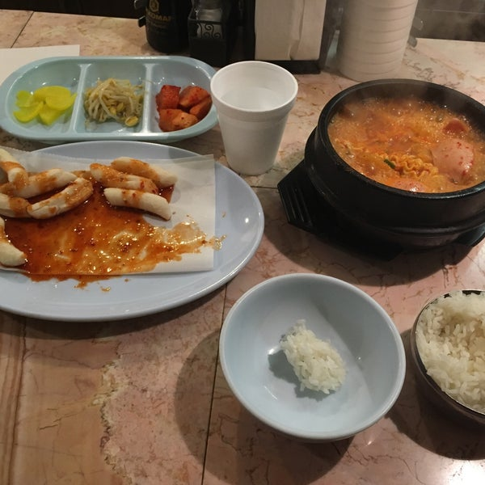
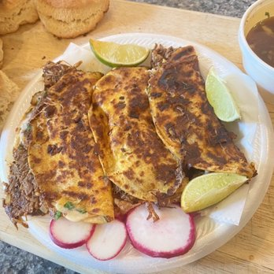
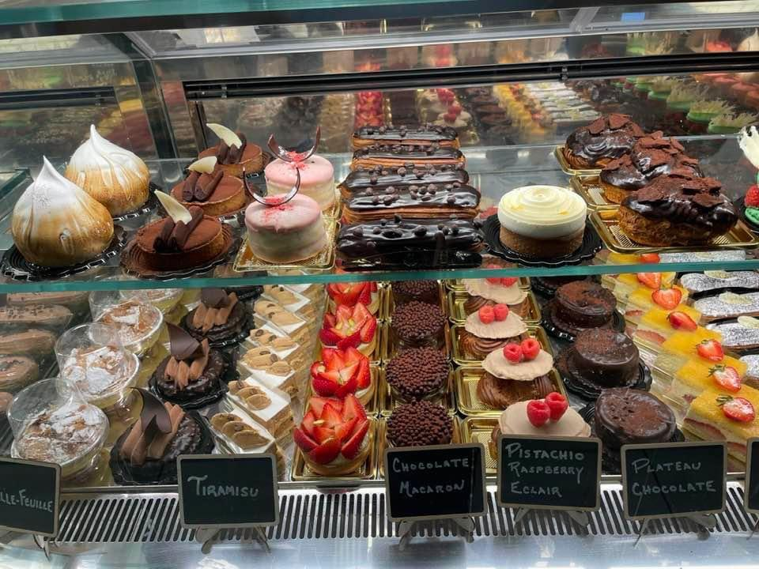
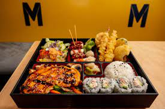
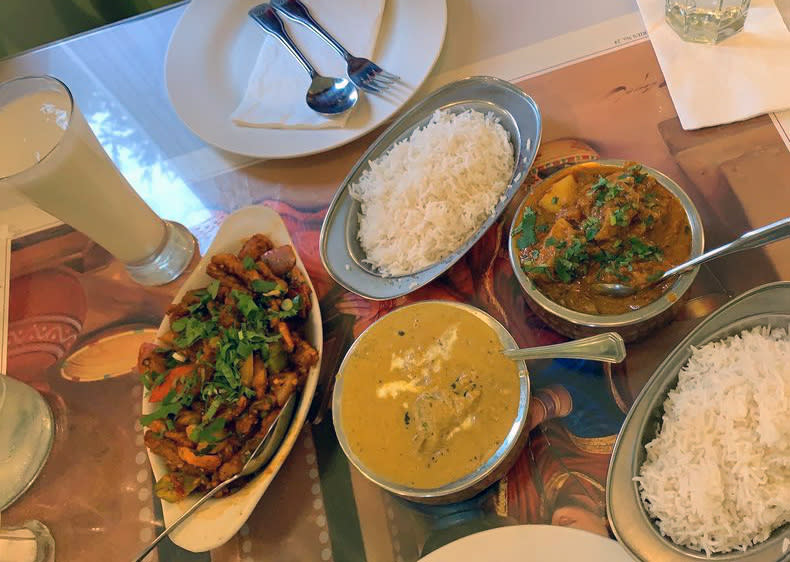

[click on each paragraph to display the image and access their website my clicking on each picture]
FIRST: The best restaurant in Ann Arbor is Rich Jc. First, initially going into the restaurant, you are easily just taken over my spicy and savory goodness. The barlike structure not only ensures an intimate customer service experience, but helps with the crampness of an ordinary restaurant. My go to order is soondobu, spicy pork with egg and in the hot stone pot, and kimchi jiggae. The soondobu has a naturally creamy flavor that marraiges the perfect amount of spice and saltiness. A similar broth is used for kimichi Jiggae. The spicy pork is absolutely delicious, both sweet and spicy at the same time. When eating it, the rice crisps and leaves with a delicious treat. I do think the protein to rice ratio is a little lacking which is why it loses a few points. Compared to other food I've had, Rich JC is certainly not a 10/10, but they are honestly quite close.
SECOND: Beirock Taco Truck is truly a hole in the wall place for a quick meal. You can easily get a two meals for less than 15 dollars. Their burritos are huge. Their Birria tacos and Carne Asada is reminicient to that of which I had in New York City, which truly speaks to the quality of their sauce. Delicious, finger linking food.
THIRD: Canelle is the perfect place to grab a quick coffee and indulge in a delicious pastry. In particular, their PacMan pastry is a delicious mix between sugary milky cream and the saltiness of the bread. Their crossoint is also perfetly crispy and layered. I haven't tried their sandwiches, yet but have heard that it is beyond amazing. Their coffee tends to be bitter and demonstrates a lack of expertise in that field. However, it is otherwise amazing.
FOURTH: Plate sushi is a little gouremet, but their bento boxes are packed with nutrients and macros. Their fried food is not overly oily and you are getting your bang for your buck. While it can be on the pricier side, their attention to the flavor while also lowering sodium is truly remarkable. It is, however, a little far and sometimes their eel avocado rool aka my favorite roll falls short. Hence. a lower score compared to the last three locations
Fifth: Namaste is a delicious restaurant. Due to my lack of expertise in south asian cuisines, it is hard for me to deterine whether or not the food is authnetic or truly delicious. For my tastes, I thought their chicken Briyanni and Chicken Tikka Masala is amazing, although a little too sweet at times.They should provide more yogurt for the Briyanni, but their overall dishes are infused with aromatic spices and is truly a spectacular place to eat.

Comments